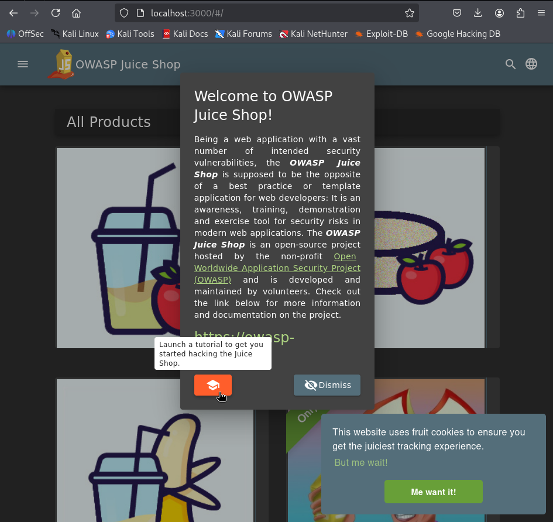
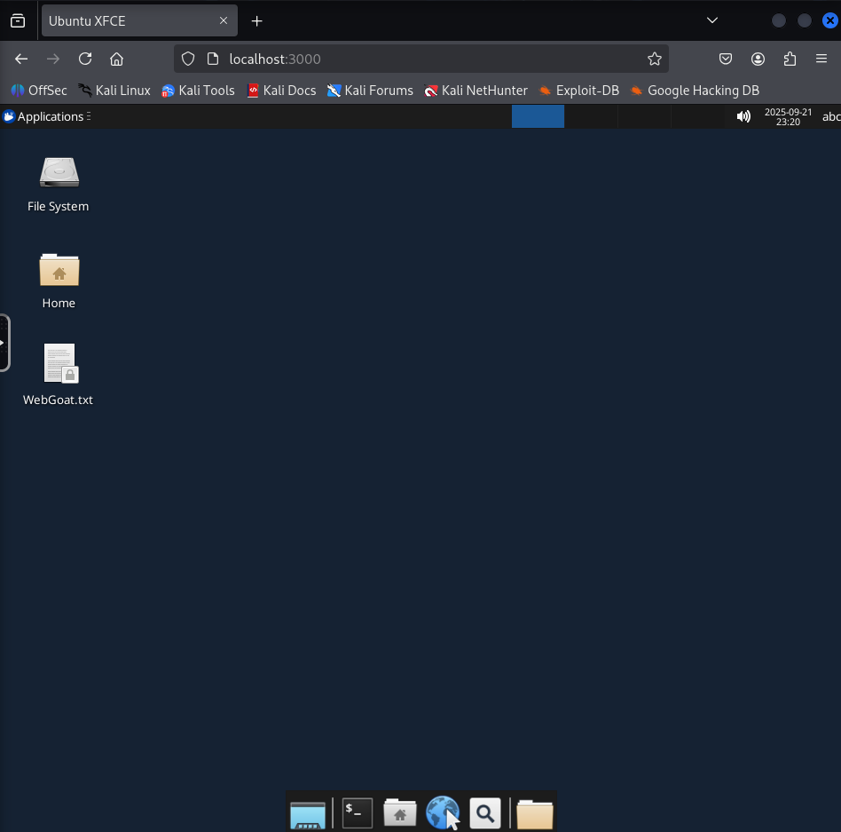
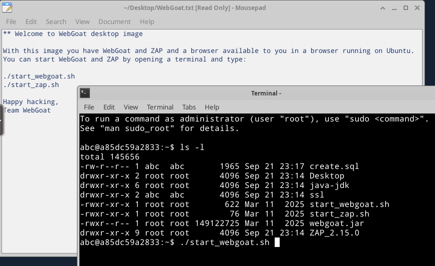
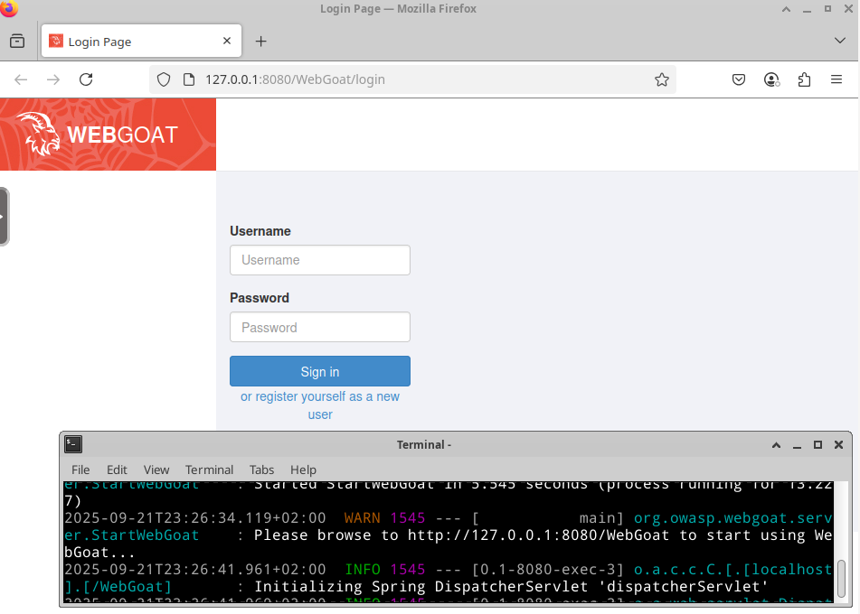
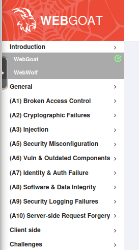
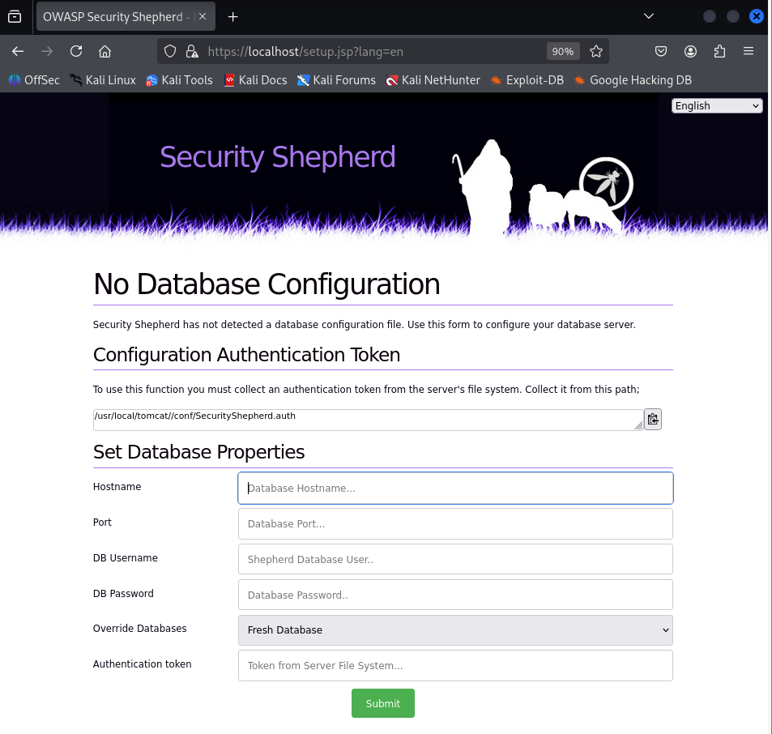
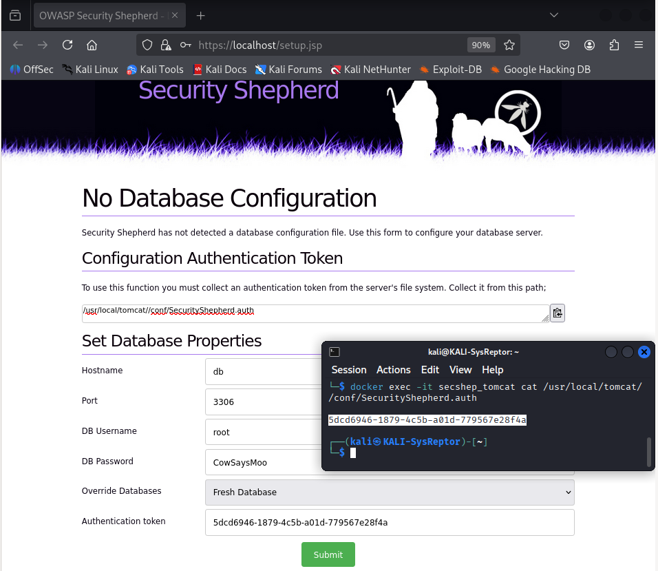
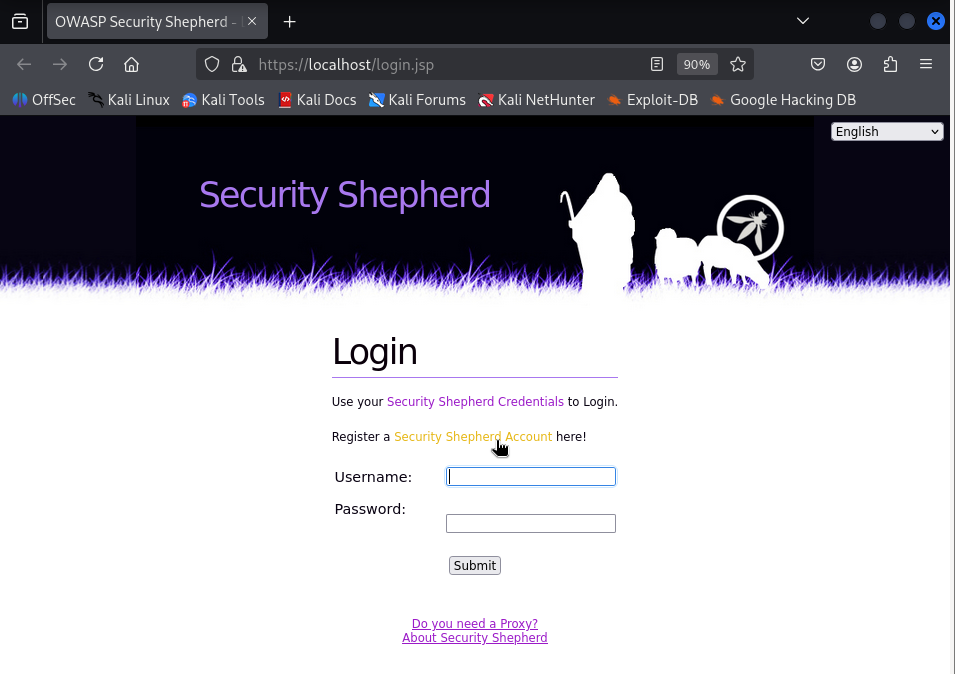
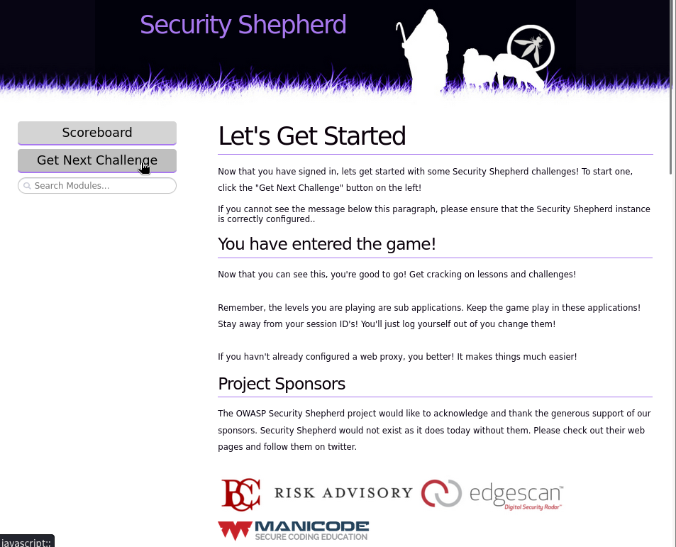
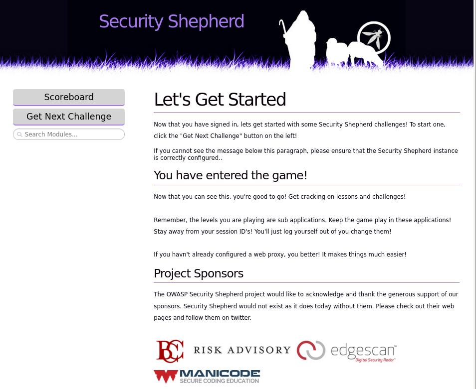

OWASP
Prácticas Taller: OWASP - Entornos Actualizados
Introdución
A OWASP (Open Web Application Security Project) é unha fundación sen ánimo de lucro dedicada a mellorar a seguridade do software. Naceu en 2001 e, desde entón, produce guías, ferramentas abertas e proxectos de referencia que son empregados por profesionais e organizacións de todo o mundo para desenvolver aplicacións máis seguras.
Un dos proxectos máis coñecidos é o OWASP Top 10, unha lista que se actualiza aproximadamente cada catro anos e que recolle as dez vulnerabilidades de seguridade máis críticas en aplicacións web. O OWASP Top 10 serve como estándar de facto para concienciar desenvolvedores, equipos de seguridade e responsables técnicos sobre os riscos máis frecuentes e perigosos.
Entre os riscos identificados atópanse vulnerabilidades como:
- Inxeccións (SQL, NoSQL, OS, LDAP…)
- Fallos de autenticación
- Exposición de datos sensibles
- Configuracións inseguras
- Uso de compoñentes con vulnerabilidades coñecidas
Traballar con laboratorios OWASP permite comprender, practicar e aprender a mitigar estas vulnerabilidades nun contorno seguro e controlado.
As máquinas como OWASP Broken Web Applications (BWA) levan anos sen actualizarse (última versión en 2015). Por iso, é recomendable usar contornos OWASP máis actuais, modernos e mantidos pola comunidade.
Alternativas actualizadas recomendadas
A continuación preséntanse tres plataformas OWASP activas para traballar vulnerabilidades OWASP Top 10 de forma práctica, segura e modernas.
1. OWASP Juice Shop
OWASP Juice Shop é unha aplicación web intencionadamente insegura escrita en Node.js, Express e Angular. Representa todas as vulnerabilidades OWASP Top 10 e moitas máis.
- Interfaz moderna e gamificada
- Retos ocultos con puntuación
- Docker-ready
Pódense publicar solucións?
Si, porque é un proxecto open-source baixo licenza MIT.
Incluso o propio proxecto ofrece unha sección oficial con Challenge solutions:
- GitHub do proxecto
- Guía oficial de axuda
- Pwning OWASP Juice Shop - Appendix - Solucións
Única excepción
Se estás a usar Juice Shop nun curso, exame ou CTF con regras propias, debes respectar esas normas antes de publicar.
Instalación con Docker nunha distribución Kali GNU/Linux:
Cheat Sheets Docker
Ligazóns de Interese: Cheat Sheets Docker
sudo apt update
sudo apt -y install docker.io docker-compose
sudo docker pull bkimminich/juice-shop
sudo docker run --rm -p 3000:3000 bkimminich/juice-shop
Logo accede no navegador a http://localhost:3000

De interese
- Non necesita login por defecto.
- Moi útil en formacións prácticas e CTFs internos.
Comezar a resolver Desafíos
Acceder a Learning para realizar os retos publicados.
2. OWASP WebGoat
WebGoat é unha aplicación educativa Java con explicacións integradas e prácticas guiadas paso a paso.
- Ofrece teoría e práctica con cada vulnerabilidade
- Mantida por OWASP
- Inclúe servidor backend e WebWolf para interaccións
Que é WebWolf?
WebWolf é unha aplicación complementaria de WebGoat que simula a “máquina do atacante” ou os servizos externos aos que unha aplicación pode comunicarse. Permite que os exercicios de WebGoat realicen accións que implican interaccións externas (recibir emails, servir ficheiros, callbacks, etc.) sen saír da contorna de laboratorio.
Pódense publicar solucións?
Si. Pódense publicar solucións do OWASP WebGoat porque é un proxecto open-source baixo licenza Apache 2.0
O propio proxecto inclúe explicacións das vulnerabilidades, polo que non hai restrición en compartir write-ups ou walkthroughs.
Única excepción
Se se emprega WebGoat nun curso, exame ou CTF con regras propias, hai que respectar esas normas antes de publicar solucións.
Instalación con Docker nunha distribución Kali GNU/Linux:
Cheat Sheets Docker
Ligazóns de Interese: Cheat Sheets Docker
sudo apt update
sudo apt -y install docker.io docker-compose
sudo docker pull webgoat/webgoat-desktop
sudo docker run -p 127.0.0.1:3000:3000 --shm-size=1g \
-e PUID=$(id -u) -e PGID=$(id -g) \
-e TZ=Europe/Madrid \
webgoat/webgoat-desktop
Logo accede a http://localhost:3000

Lemos o contido do ficheiro WebGoat.txt, o cal indícanos como executar WebGoat:


Tes que rexistrarte/crear unha conta para poder acceder ás leccións e retos (aparecen no panel esquerdo despois de iniciar sesión).

Conflicto de portos
- OWASP Juice Shop adoita levantarse en
http://localhost:3000(porto 3000). - OWASP WebGoat (desktop) tamén adoita levantarse en
http://localhost:3000(porto 3000).
Isto significa que os dous colisionan no mesmo porto: só un pode escoitar en:3000á vez.
Se se quere executalos ao mesmo tempo débese cambiar o porto externo ao lanzar un deles. Por exemplo:
# Juice Shop en :3000
docker run --rm -p 3000:3000 bkimminich/juice-shop
# WebGoat en :9090
docker run --rm -p 9090:9090 webgoat/webgoat-desktop
Así, accederíase a:
- Juice Shop → http://localhost:3000
- WebGoat → http://localhost:9090
⚠️ Recomendación: escoller sempre portos distintos (3000, 9090, etc.) para evitar conflitos cando uses varios laboratorios OWASP en paralelo.
3. OWASP Security Shepherd
Security Shepherd é unha plataforma CTF con múltiples retos de seguridade web. O seu obxectivo é ensinar tanto a explotación como a mitigación de vulnerabilidades.
- Permite crear competicións por equipos
- Retos desde nivel básico ata avanzado
- Multitude de escenarios reais
Instalación vía Docker Compose nunha distribución Kali GNU/Linux:
Cheat Sheets Docker
Ligazóns de Interese: Cheat Sheets Docker
Proceder según o documentado en Docker Environment Setup
sudo apt update
sudo apt -y install docker.io docker-compose
git clone https://github.com/OWASP/SecurityShepherd.git
cd SecurityShepherd
sudo gpasswd -a kali docker
Reemprazar o docker-compose.yml co seguinte contido:
services:
db:
image: mariadb:10.6
container_name: secshep_mariadb
command: ["--character-set-server=utf8mb4","--collation-server=utf8mb4_unicode_ci","--bind-address=0.0.0.0"]
environment:
- MYSQL_ROOT_PASSWORD=CowSaysMoo
- MYSQL_DATABASE=securityshepherd
- MYSQL_USER=shep
- MYSQL_PASSWORD=sheppass
volumes:
- securityshepherd_data:/var/lib/mysql
healthcheck:
test: ["CMD", "mysqladmin", "ping", "-h", "127.0.0.1", "-u", "root", "-pCowSaysMoo"]
interval: 10s
timeout: 5s
retries: 10
restart: unless-stopped
networks: [shepnet]
mongo:
image: mongo:4.4
container_name: secshep_mongo
command: ["--bind_ip_all"]
volumes:
- securityshepherd_mongodata:/data/db
healthcheck:
test: ["CMD-SHELL", "mongo --quiet --eval 'db.runCommand({ ping: 1 }).ok' || exit 1"]
interval: 10s
timeout: 5s
retries: 20
start_period: 20s
restart: unless-stopped
networks: [shepnet]
web:
image: owasp/security-shepherd:3.1
container_name: secshep_tomcat
depends_on:
db:
condition: service_healthy
mongo:
condition: service_healthy
environment:
- DB_SERVER_IP=db
- DB_PORT=3306
- DB_NAME=securityshepherd
- DB_USER=shep
- DB_PASS=sheppass
- MONGO_SERVER=mongo
- MONGO_PORT=27017
- TZ=Europe/Madrid
- JAVA_OPTS=-Xms256m -Xmx768m -XX:MaxMetaspaceSize=256m
ulimits:
nofile:
soft: 65536
hard: 65536
nproc: 65535
ports:
- "8081:8080"
- "443:8443"
restart: unless-stopped
networks: [shepnet]
networks:
shepnet:
volumes:
securityshepherd_data:
securityshepherd_mongodata:
Executar o seguinte comando:
Accede despois a http://localhost:8081 no navegador ou a https://localhost:8443.

Cubrir o formulario cos datos de configuración da base de datos (ver docker-compose.yml):

Accedemos á páxina de Login:

Xeramos un usuario:

Accedemos co usuario creado:

Xa podemos comezar a realizar os retos(Challenge):
- No primeiro arrancamos Burp Suite, interceptamos a comunicación e cambiamos
guestporadmin. Copiamos akeye cubrímola no campoSubmit
Pódense publicar solucións?
Si. Pódense publicar solucións de OWASP Security Shepherd porque é un proxecto open-source baixo licenza Apache 2.0.
O propio proxecto está deseñado como unha plataforma de aprendizaxe/CTF, polo que escribir walkthroughs ou write-ups é totalmente lexítimo.
Única excepción
Se Security Shepherd se emprega dentro dun curso, exame ou CTF con regras propias, hai que respectar esas normas antes de publicar solucións.
Comparativa rápida
| Plataforma | Linguaxe | Dificultade | Docker | Contido guiado | Ideal para |
|---|---|---|---|---|---|
| Juice Shop | Node.js | Media-Alta | ✅ | ❌ | Gamificación |
| WebGoat | Java | Media | ✅ | ✅ | Formación |
| Security Shepherd | Java/PHP | Media-Alta | ✅ | ✅ | Competicións |
Estas plataformas substitúen e superan OWASP BWA, permitindo traballar nun entorno actualizado, portable e seguro.